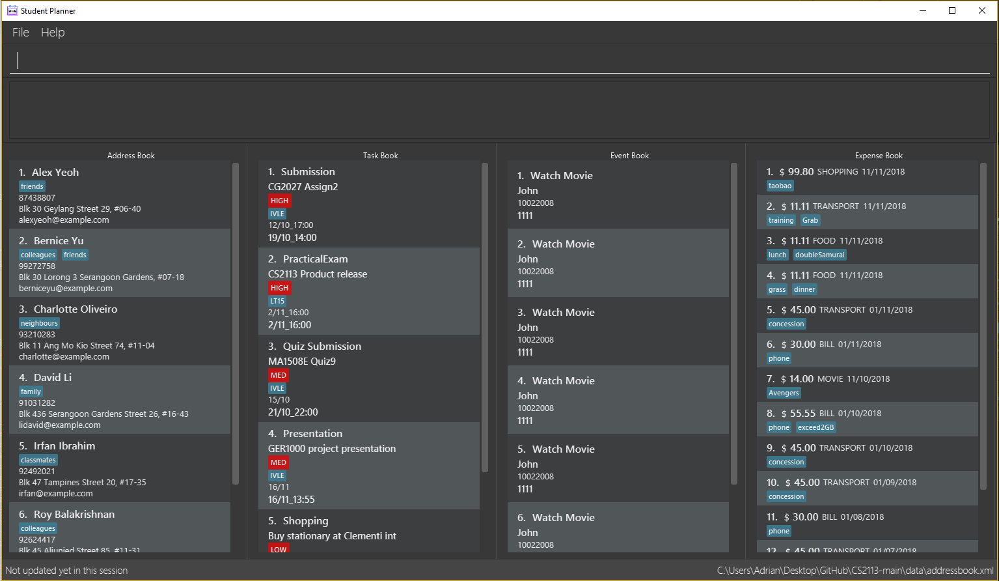

By: CS2113-AY1819S1-T13-1 Since: September 2018 Licence: MIT
- 1. Introduction
- 2. Quick Start
- 3. Features
- 3.1. Viewing help :
help - 3.2. Adding a task:
add - 3.3. Listing all tasks :
list - 3.4. Editing a task :
edit - 3.5. Locating tasks by name:
find - 3.6. Deleting a task :
delete - 3.7. Listing entered commands :
history - 3.8. Undoing previous command :
undo - 3.9. Redoing the previously undone command :
redo - 3.10. Clearing all entries :
clear - 3.11. Exiting the program :
exit - 3.12. Saving the data
- 3.13. Sending notification
- 3.14. Local backup
Coming in [v1.2] - 3.15. Online backup
Coming in [v1.3] - 3.16. Setup or restore backup data
- 3.17. Encrypting data files
[coming in v2.0]
- 3.1. Viewing help :
- 4. FAQ
- 5. Command Summary
1. Introduction
Student Planner (SP) is for a one stop desktop app for students to manage their schedule. More importantly, SP is optimized for those who prefer to work with a Command Line Interface (CLI) while still having the benefits of a Graphical User Interface (GUI). If you can type fast, you can use SP for all your daily scheduling done faster than traditional GUI apps. Interested? Jump to the Section 2, “Quick Start” to get started. Enjoy!
2. Quick Start
-
Ensure you have Java version
9or later installed in your Computer. -
Download the latest
studentplanner.jarhere. -
Copy the file to the folder you want to use as the home folder for your Student Planner.
-
Double-click the file to start the app. The GUI should appear in a few seconds.
 -
Type the command in the command box and press Enter to execute it.
e.g. typinghelpand pressing Enter will open the help window. -
Some example commands you can try:
-
list: lists all tasks -
addn/Attend Post Modern Jukebox concert e/180918_2000 p/HIGH: adds a task namedAttend Post Modern Jukebox concerton18 September 2018 at 8pmwithHIGHpriority to the Address Book. -
delete3: deletes the 3rd task shown in the current list -
exit: exits the app
-
-
Refer to Section 3, “Features” for details of each command.
3. Features
Command Format
-
Words in
UPPER_CASEare the parameters to be supplied by the user e.g. inadd n/NAME,NAMEis a parameter which can be used asadd n/John Doe. -
Items in square brackets are optional e.g
n/NAME [t/TAG]can be used asn/John Doe t/friendor asn/John Doe. -
Items with
… after them can be used multiple times including zero times e.g.[t/TAG]…can be used ast/friend,t/friend t/familyetc. -
Parameters can be in any order e.g. if the command specifies
n/NAME d/DATE,d/DATE n/NAMEis also acceptable.
3.1. Viewing help : help
Format: help
3.2. Adding a task: add
Adds a task to the schedule planner
Format: add n/NAME [b/BODY] [s/START_DATETIME] [e/END_DATETIME] [t/TAG]… [p/PRIORITY]
| A task can have any number of tags (including 0) |
Examples:
-
add n/Buy stationary tomorrow p/MED -
add n/Attend PostModern JukeBox concert e/180918_2000 p/HIGH
3.3. Listing all tasks : list
Shows a list of all tasks in the schedule planner.
Format: list
3.4. Editing a task : edit
Edits an existing task in the schedule planner.
Format: edit INDEX [n/NAME] [b/BODY] [s/START_DATETIME] [e/END_DATETIME] [t/TAG]… [p/PRIORITY]
Examples:
-
edit 1 b/Need two pens
Edits the body of the 1st task to beNeed two pens. -
edit 2 t/
Edits the 2nd task by clearing all existing tags.
3.5. Locating tasks by name: find
Finds tasks whose names or body contain any of the given keywords.
Format: find KEYWORD [MORE_KEYWORDS]
Examples:
-
find Pen
ReturnspenandPen pineapple pen -
find concert meeting cute
Returns any task having names or bodyconcert,meeting, orcute
3.6. Deleting a task : delete
Deletes the specified task from the schedule planner.
Format: delete INDEX
Examples:
-
list
delete 2
Deletes the 2nd task in the schedule planner. -
find Pen
delete 1
Deletes the 1st task in the results of thefindcommand.
3.7. Listing entered commands : history
Lists all the commands that you have entered in reverse chronological order.
Format: history
|
Pressing the ↑ and ↓ arrows will display the previous and next input respectively in the command box. |
3.8. Undoing previous command : undo
Restores the schedule planner to the state before the previous undoable command was executed.
Format: undo
|
Undoable commands: those commands that modify the schedule planner’s content ( |
Examples:
-
delete 1
list
undo(reverses thedelete 1command) -
select 1
list
undo
Theundocommand fails as there are no undoable commands executed previously. -
delete 1
clear
undo(reverses theclearcommand)
undo(reverses thedelete 1command)
3.9. Redoing the previously undone command : redo
Reverses the most recent undo command.
Format: redo
Examples:
-
delete 1
undo(reverses thedelete 1command)
redo(reapplies thedelete 1command) -
delete 1
redo
Theredocommand fails as there are noundocommands executed previously. -
delete 1
clear
undo(reverses theclearcommand)
undo(reverses thedelete 1command)
redo(reapplies thedelete 1command)
redo(reapplies theclearcommand)
3.10. Clearing all entries : clear
Clears all entries from the schedule planner.
Format: clear
3.11. Exiting the program : exit
Exits the program.
Format: exit
3.12. Saving the data
Schedule planner data are saved in the hard disk automatically after any command that changes the data.
There is no need to save manually.
3.13. Sending notification
Alert user when a deadline is due
3.14. Local backup Coming in [v1.2]
Allow user to backup data locally by calling backup local <path to backup too>
Where the backup folder is a folder the user has write permissions to.
3.15. Online backup Coming in [v1.3]
Allow user to backup data to online services like GitHub gists or Google Drive by calling backup online <service>
Where the service to backup data to has already been setup beforehand
3.16. Setup or restore backup data
Allow user to setup backup settings (setup cloud services like GitHub gists or Google Drive, backup location) by calling backup doctor
3.17. Encrypting data files [coming in v2.0]
Allow user to enable encryption by calling encrypt p/PASSWORD
Application will prompt for decryption password if encryption is enabled
4. FAQ
Q: How do I transfer my data to another Computer?
A: Install the app in the other computer and overwrite the empty data file it creates with the file that contains the data of your previous schedule planner folder.
5. Command Summary
-
Add
add n/NAME [b/BODY] [s/START_DATETIME] [e/END_DATETIME] [t/TAG]… [p/PRIORITY]
e.g.add n/Attend PostModern JukeBox concert e/180918_2000 p/HIGH -
Clear :
clear -
Delete :
delete INDEX
e.g.delete 3 -
Edit :
edit INDEX [n/NAME] [b/BODY] [s/START_DATETIME] [e/END_DATETIME] [t/TAG]… [p/PRIORITY]
e.g.edit 2 n/Buy fruits e/010119_0700 -
Find :
find KEYWORD [MORE_KEYWORDS]
e.g.find pen Apple -
List :
list -
Help :
helpe.g.select 2 -
History :
history -
Undo :
undo -
Redo :
redo